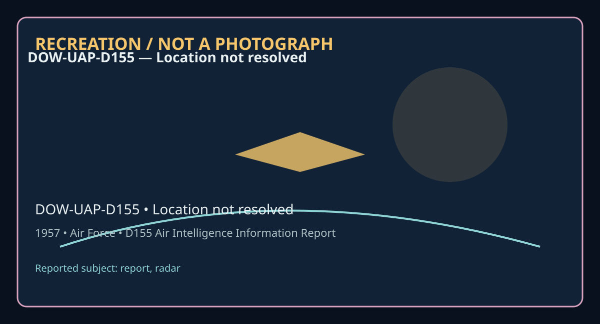

Release 07 / archival case file
D155 Air Intelligence Information Report Saudi Arabia 1957
An intelligence-era report whose value lies as much in its paperwork as in its object description.
Document ID: DOW-UAP-D155
Source filename:
DOW-UAP-D155-Air_Intelligence_Information_Report_Saudi_Arabia-1957.pdfDocument year/date marker: 1957
Location marker: Not stated in filename or opening text
Pages represented in extraction: 1

Visual label: RECREATION / NOT A PHOTOGRAPH. This original diagram is interpretive and does not reproduce a source image.
What the file actually says
The opening page reads: “Text extraction returned no readable page text; consult the source PDF.”
The extraction contains 1 readable page blocks. Page notes below sample the opening sequence; the source PDF remains the controlling record.
- Page 1: Text extraction returned no readable page text; consult the source PDF.
Why this record matters—and why it does not settle the case
The document is evidence that a report, memorandum, personnel record, or analytical product existed in the supplied archive. Its evidentiary strength depends on provenance, contemporaneous detail, chain of custody, and whether independent sensor or witness records survive. A reported object is not automatically an identified craft, and an unresolved classification is not proof of non-human technology.
Its limit is equally important: this article does not upgrade a witness account into a physical conclusion. Where the PDF preserves a claim, we call it a claim; where it preserves an agency judgment, we call it a judgment; where the record is silent, we leave the silence intact.
Historical and disclosure context
Read in the broader disclosure schema, DOW-UAP-D155 belongs to the paper trail: operational reporting, intelligence collection, contractor analysis, or administrative memory. The surrounding era can explain why such records were created and restricted, but context is not confirmation. The useful question is not “does this prove the extraordinary?” but “what did the institution record, what did it omit, and what can a later investigator responsibly infer?”
Source and page guide
Primary source: the supplied PDF. Page references above refer to extracted page blocks and should be checked against the numbered PDF pages, especially where scans or blank pages affect extraction.